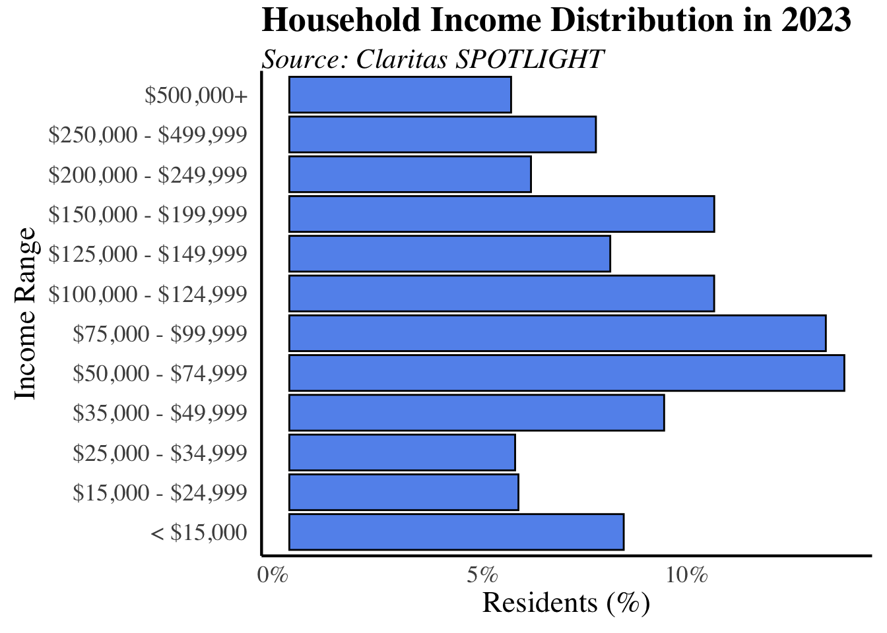

Economic
Standard of Living
Household Income

What is the measure?
This data consists of money income – exclusive of certain money receipts such as capital gains – before payment of personal income taxes, Social Security, union dues, Medicare deductions and the like for Santa Barbara County households. It excludes non-cash benefits such as food stamps or health benefits. The data is adjusted for inflation. The measure comes from Claritas SPOTLIGHT, a data source providing information on various community metrics.
Why is it important?
This is the best measure of income in the context of the standard of living for households because it controls for changes in household size. It measures the ability of families to make necessary and discretionary expenditures on goods and services. The distribution of income can illuminate income disparities and support services that can promote greater economic equity. Businesses and investors can also better understand the local market.
How are we doing?
In 2023, the income distribution in Santa Barbara County showcased a majority of households earning between $50,000 and $74,999 annually. There was a greater percentage of households making above $100,000, although the number of households making less than $15,000 still remained high. Nearly 8% of households make under $15,000, with about 20% categorized as “very low income” according to HUD’s Santa Barbara County income limits for a 4-person household.
Household Budgets
What is the measure?
The annual budget estimates for Santa Barbara County in 2024 comes from the Economic Policy Institute’s (EPI) Family Budget Calculator. The data measures the monthly income a family needs in order to attain a modest standard of living within each county. The budgets estimate the county-specific costs for various family types. The “Other” category encapsulates things like apparel, personal care, along with a number of other necessities to maintain an adequate standard of living. All monetary values are in 2023 dollars.
Why is it important?
The annual budget offers a realistic assessment of the income required for Santa Barbara County residents to meet basic needs. Unlike traditional poverty measures, considering the local cost of living provides deeper insights into the economic realities and standard of living within the county. By utilizing household income estimates, the annual budget serves as a gauge to determine whether residents can afford to live comfortably given the prevailing economic conditions.
How are we doing?
In Santa Barbara County, housing is the largest expense for all family sizes. For individuals and couples, taxes are the second highest expense. However, for families with children, childcare is slightly more than taxes as the second largest spending category. Santa Barbara County’s high housing costs and overall living expenses contribute to its ranking as the 9th least affordable county in California, despite being ranked 20th in terms of income among the state’s 58 counties, according to the Economic Policy Institute (EPI).
For individuals, the total annual expenses average $72,912. This includes approximately 33% of the budget allocated to housing ($24,480), with additional expenses for transportation ($13,332), taxes ($14,208), and healthcare ($6,336).
For couples, the annual budget increases to $92,508, with a notable rise in housing costs to $28,200 (30%) and transportation costs to $16,824. Couples also face higher expenses for healthcare ($12,672) and taxes ($14,040).
For families of four, the budget rises to $154,812, with housing costs at $32,004, healthcare at $20,220, and childcare reaching $27,612. This family size spends about 20% of their budget on housing.
Retirement
What is the measure?
Retirement income data come from the American Community Survey (ACS) 5-year estimates, conducted by the U.S Census Bureau. This measure presents the average retirement and Social Security Income of individuals in Santa Barbara County, adjusted to 2018 inflation dollars. Retirement income encompasses annual pensions, annuities, and other retirement account earnings, excluding Social Security income. Social Security Income reflects the average annual benefits received from the Social Security Administration, covering old-age, survivors, and disability insurance. Unlike Supplemental Security Income (SSI), which is need-based, Social Security income is based on lifetime earnings.
Why is it important?
Greater retirement income for residents plays a critical role in ensuring long-term financial stability and overall well-being. By assessing this income, we can determine if older adults have the necessary resources to sustain their quality of life. The data can also enable policymakers to address income gaps and improve senior services, while educating the public to better prepare future retirees for their financial needs.
How are we doing?
Average retirement income is 42% higher than Social Security Income. In 2022, the average annual retirement income for Santa Barbara residents was $40,475 ($3,373 per month), whereas Social Security Income averaged $23,501 ($1,958 per month). Between 2018 and 2022, Social Security Income increased by nearly 17%, likely due to inflation and the economic impacts of the COVID-19 pandemic. However, when compared to average annual household budgets (as shown in the previous graph), neither retirement income nor Social Security Income fully meets the financial needs of the county.
Public Assistance
What is the measure?
Public assistance income data is sourced from the American Community Survey (ACS) 5-year estimates. This data highlights the average annual public assistance income received per household and the percentage of Santa Barbara County households receiving cash public assistance income and/or food stamp/Supplemental Nutrition Assistance Program (SNAP) benefits. Income is adjusted for inflation to 2018 USD.
Cash public assistance income includes monetary aid provided by government entities, such as CalWORKS, Supplemental Security Income (SSI), and California Veterans’ Cash Benefit. These programs primarily support individuals or families with very low incomes, veterans, or those with disabilities.
Food stamps/SNAP benefits, known as CalFresh in California, are available to low-income individuals and households. Eligibility for CalFresh requires an annual income of less than $19,578 for single individuals or less than $40,560 for a household of four. Recipients receive $3,000 per year for individuals and $10,020 per year for families of four to spend on groceries and other edible food items, excluding items like vitamins or alcohol.
Why is it important?
These metrics serve as indicators of economic challenges the community faces, such as low wages or high standard of living costs. A high percentage of households receiving public assistance income can imply that a significant number of residents are experiencing financial difficulties. Policy makers can use this information to assist with budgeting and managing public funds effectively, and to ensure that public assistance programs are promoting economic development within the community.
How are we doing?
Both cash public assistance income and CalFresh/SNAP benefits per household have gradually increased since 2018. The average annual cash public assistance income has grown from $3,220 in 2018 to $4,375 in 2022, while CalFresh/SNAP benefits have risen from $11,748 to $13,531 per household. By 2022, the percentage of residents receiving cash public assistance increased to 3.0%, and those receiving Food Stamp/SNAP benefits rose to 9.1%.